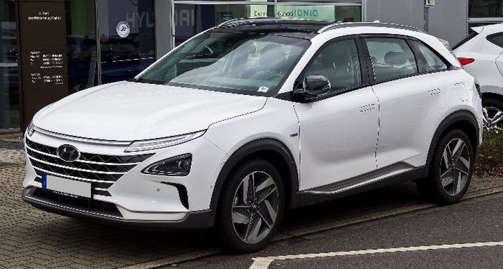

Manapság nagyon felkapott technológia az elektromos autó, de nem csak előnyei, hanem hátrányai is vannak. A legnagyobb problémájuk, hogy lítium-ion akkumulátorokat használnak. Egy tonna lítium bányászásáshoz például 2 millió liter vízre van szükség. Chile egy területén például a víz 65%-a csakis a lítium termelésre ment. Emellett a bányászás más méreganyagokat is felold, ami, ha a környezetbe jut, óriási pusztítást okozhat. Az elemekhez lítiumon kívül többek között kobaltra és nikkelre van szükség, ami hasonlóan káros a környezetre.
Erre egy megoldás lehetne a hidrogén által meghajtott autó. Ez hidrogénnel teli üzemanyag cellák segítségével termel áramot, majd ez az áram hajtja meg az autó motorját.
Az elektromos autó egy másik hátránya a hosszú töltési idő: sokszor 8 óráig tart, hogy teljesen megteljen az akkumulátor. Ez ingázásra nem nagy baj, ha éjjel lesz feltöltve az autó, viszont ha valaki utazni szeretne, nagyon hátrányos lehet. Ezzel ellentétben egy hidrogén üzemanyagcella feltöltése 3-5 percbe telik, annyi idejig mint rendes üzemanyaggal működő kocsiknál is. Egyetlen feltétel, hogy legyen hozzá töltőállomás.